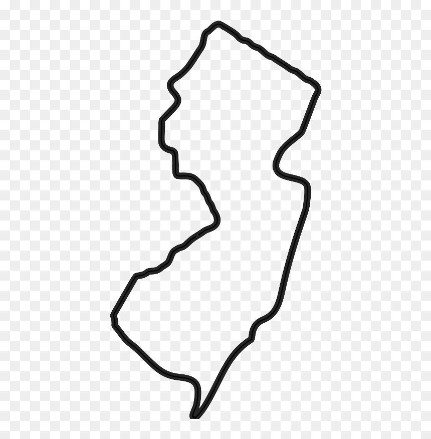

The beginning of Kean
Kean began as a teacher-training institution, rooted in the belief that education strengthens every community it touches.
About Kean University
A university that keeps moving forward.
A public university with deep roots in New Jersey, a global perspective and a long-standing commitment to accessible, career-connected education.
Begin the journey ↘1855 — PRESENT
01 / 08
A living institution
Kean began as a teacher-training institution. It grew with New Jersey, widened its invitation and kept moving toward the places where opportunity was needed.
The story so far
Kean began as a teacher-training institution, rooted in the belief that education strengthens every community it touches.
Kean expanded its academic mission and welcomed students with many backgrounds, ambitions and routes forward.
Research, discovery and community engagement now sit alongside a practical education designed for the world students enter next.
Kean connects Union, Jersey City, Ocean County, Skylands and Wenzhou through a shared public mission.
04 locations / one university
Move through the map. Find the place that feels like a beginning.

The flagship
Kean’s flagship campus sits on approximately 180 acres in Union, New Jersey, about 30 minutes from New York City. It is the full Kean experience in one place: academic buildings, residence halls, athletics, research and the everyday energy of student life.
Metropolitan access
Kean Jersey City expands the university’s presence in Hudson County after the July 1, 2026 merger with New Jersey City University. Its urban setting brings students close to New York City and a different kind of campus rhythm.
Protected land / field learning
In Jefferson Township in western Morris County, approximately 40 acres of protected land create a rare setting for field-based learning, research, events and reflection.
What moves us
Global reach
Kean operates Wenzhou-Kean University in China, the only public American university with a campus in China. Together with online and global learning opportunities, it connects students to an English-language academic environment and a world of perspectives.
Explore what comes next ↗